자재 명세를 만들고 제조 지시를 내리면 필요한 자재와 부족한 양이 보입니다. 자재가 부족해도 진행할 수 있으며, 재고가 음수가 된다는 안내가 나옵니다. 완료하면 재고 모듈이 자재를 줄이고 완제품을 늘리며, 되돌리면 재고도 함께 돌아갑니다.
무엇을 · 왜#
제조는 재고가 있어야 켤 수 있습니다. 제조 모듈은 재고를 직접 움직이지 않습니다. 완료 이벤트를 내면 재고 모듈이 구독해 자재를 줄이고 완제품을 늘립니다. 회계가 켜져 있으면 재공품을 거쳐 전표가 생깁니다.
자재가 모자라도 막지 않는 이유는 기록이 늦어 실제로 있는 자재가 반영되지 않을 수 있기 때문입니다. 음수 재고는 숨기지 않고 그대로 보여 줍니다.
먼저 알아 둘 것
- 가온가전은 가상 회사이고, 제품과 원가는 모두 가상입니다. 화면은 로컬 Supabase에서 찍었습니다.
- 녹화 전에 구성원 오제조(제조), 이재고(재고), 제품 4개(가온 선풍기, 모터 11,000, 날개 900, 하우징 4,200), 자재 재고(모터 100, 날개 12, 하우징 100)를 명령으로 넣었습니다. 날개를 실사해 300으로 맞춘 것, 남은 지시 취소, 되돌리기용 지시와 출고도 화면 밖에서 명령으로 처리했습니다.
- 이 장의 시산표는 교육용 숫자입니다. 기초 재고를 재고 조정으로 넣어 재고자산감모손실이 -1,804,400으로 보입니다. 실제 회사라면 기초 잔액 전표로 넣습니다.
- 작업장, 라우팅, 품질, 제품 수명 주기는 다루지 않습니다.
- 회계 화면은 전문가 검수 전입니다.
따라 하기#
- 켜기. 관리자로 설정 → 모듈을 엽니다. 제조 카드에
재고 모듈을 먼저 켜야 합니다라고 적혀 있습니다. 재고를 켜고 제조를 켭니다. 켜기 전의 제조는 원장에 없다고 알려 줍니다.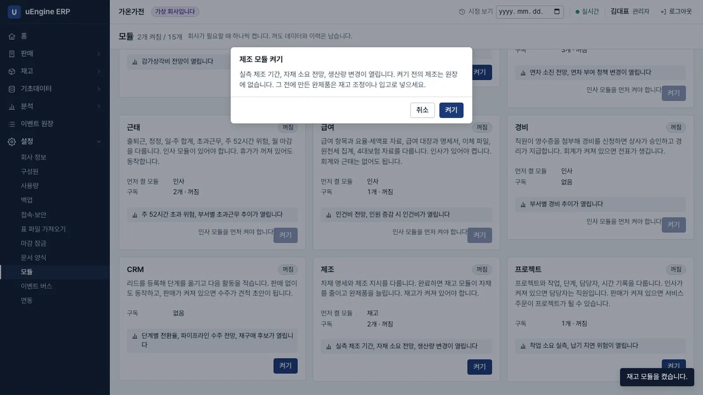
제조 켜기 - 자재 명세. 오제조로 로그인해 제조 → 자재 명세 → 새로 만들기에서 완제품
가온 선풍기를 고르고 줄 추가로 모터 1, 날개 3, 하우징 1을 넣어 저장합니다.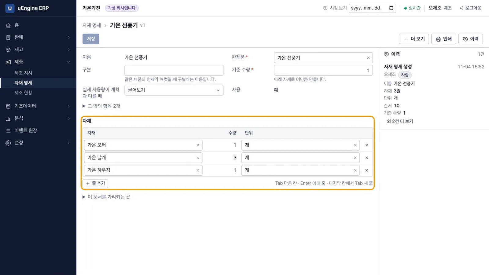
자재 명세 - 순환 막기. 새 자재 명세에서 완제품
가온 모터의 자재로가온 선풍기를 넣으면자재 명세가 순환합니다: 가온 모터 → 가온 선풍기 → 가온 모터라는 안내가 나오고 진행되지 않습니다.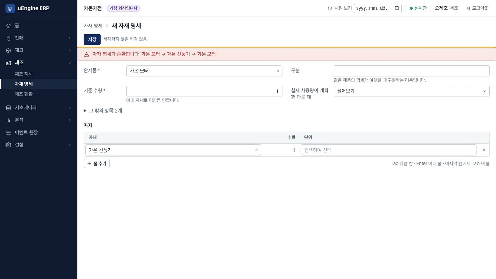
순환 - 제조 지시. 제조 → 제조 지시 → 새로 만들기에서
가온 선풍기를 고르면 자재가 나옵니다. 계획 수량을5로 고치면 날개는 15가 필요하고 현재고가 12이므로 3이 부족합니다.그래도 확정하고 완료할 수 있고, 완료하면 재고가 음수가 됩니다라고 적혀 있습니다.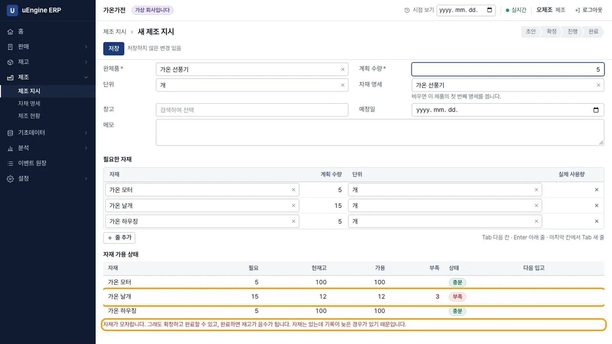
부족 표시 - 시작. 저장하면
MO/00001이 됩니다. 확정을 누르면 수량을 더 이상 고칠 수 없습니다. 시작을 누르면 진행 단계가 됩니다.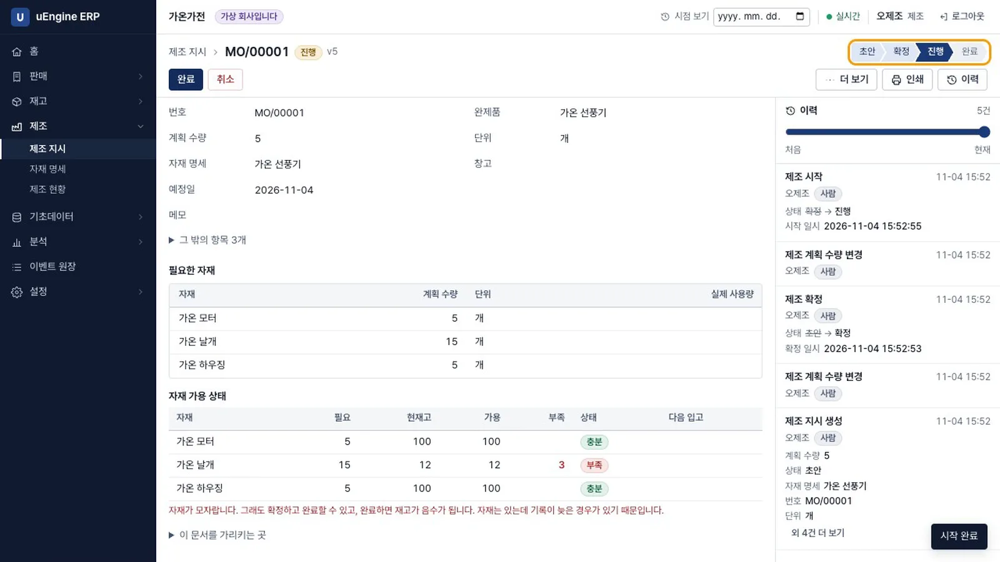
진행 - 완료. 완료를 누르고 날개 실제 사용량을
16으로 적습니다.실제 사용량이 계획과 다릅니다: 가온 날개 계획 15, 실제 16이라는 확인 문구가 나옵니다. 그대로 완료를 누릅니다.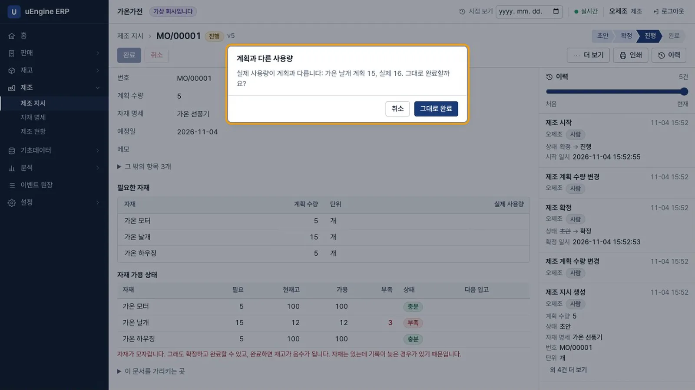
사용량 차이 - 결과. 재고 반영이
반영됨, 자재비 90,400, 완제품 단가 18,080입니다.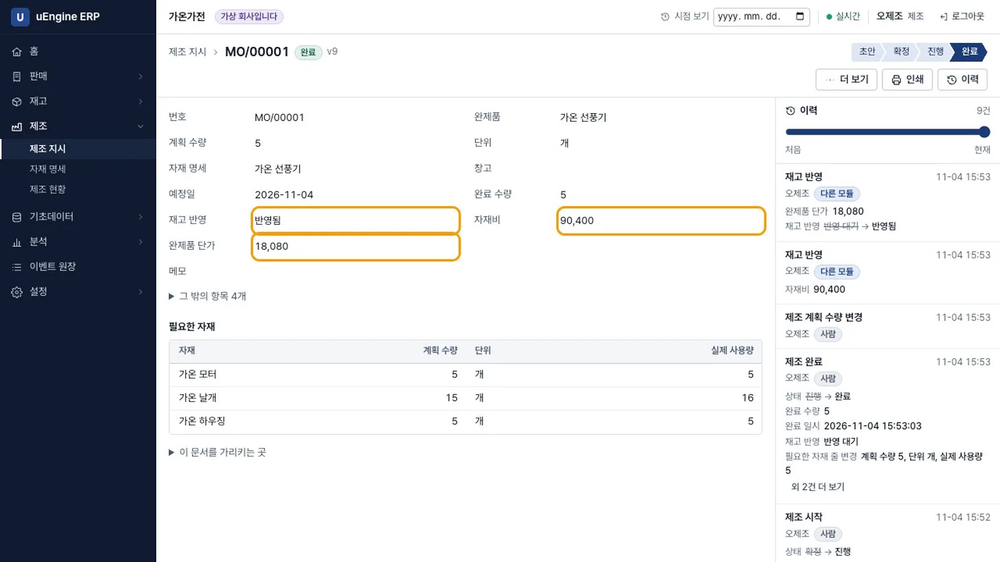
결과 - 재고 확인. 이재고로 재고 → 재고 현황을 엽니다. 날개는 -4, 모터 95, 하우징 95, 선풍기 5입니다.
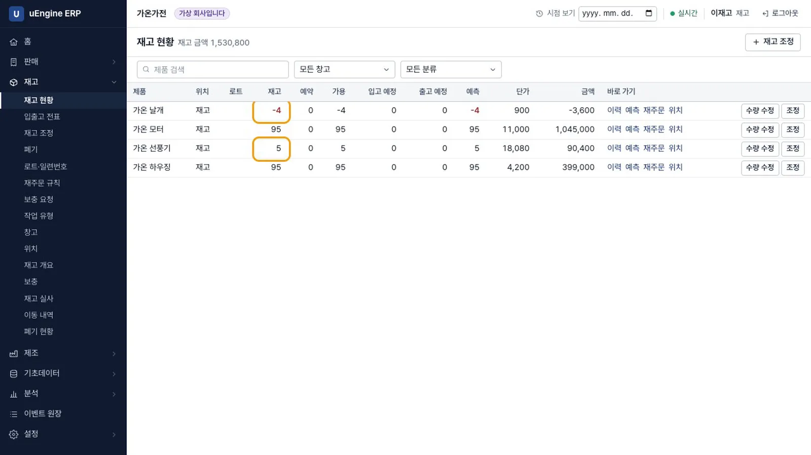
재고 음수 - 적게 만들기. 날개를 300으로 맞춘 뒤 10대 지시
MO/00002를 확정하고, 완료 수량4로 완료합니다.계획보다 적게 만들었습니다라는 확인 문구가 나옵니다. 남은 수량은 새 지시로 남겨 두기를 고릅니다. 목록에MO/000036대가 확정 상태로 생깁니다.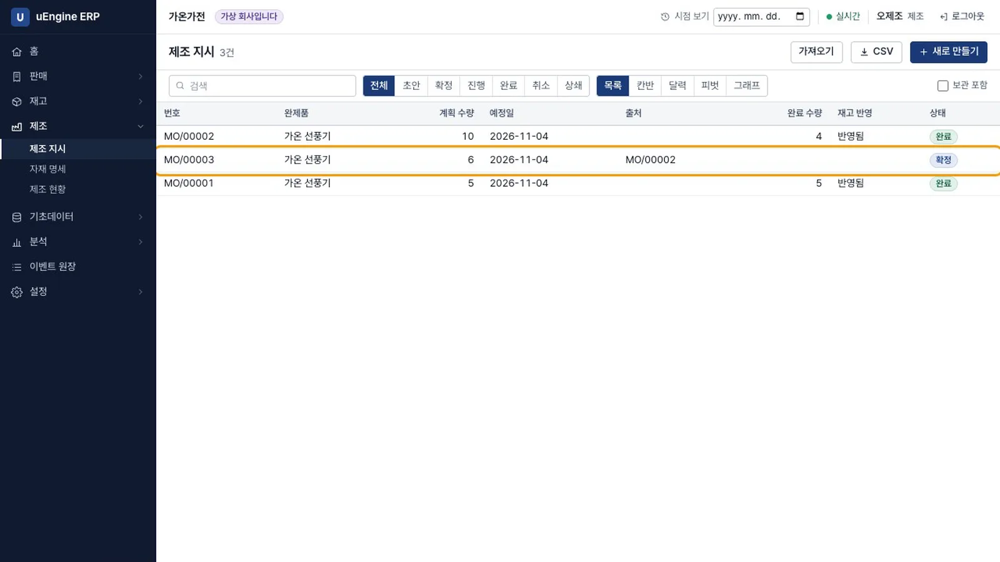
남은 수량 - 재주문 규칙. 이재고로 재고 → 재주문 규칙 → 새로 만들기에서 변형
가온 선풍기, 위치재고, 최소20, 최대50, 실행수동, 보충 방식제조를 넣습니다.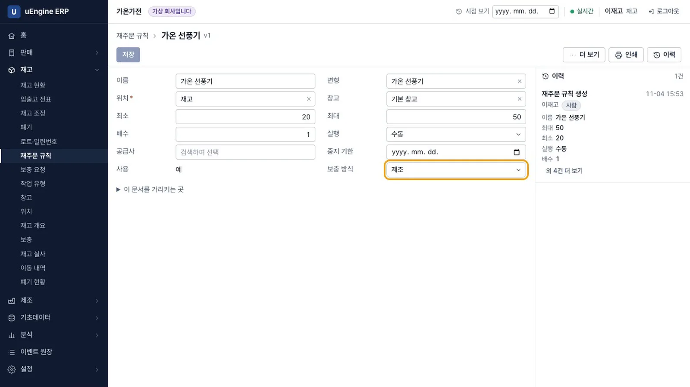
재주문 규칙 - 보충. 재고 → 보충에 공급처
직접 제조, 주문 수량 41이 나옵니다. 주문을 누르면 지시 초안이 생깁니다. 입고 예정 수량을 포함하므로 추가 주문은 필요 없고 예측 수량은 50입니다.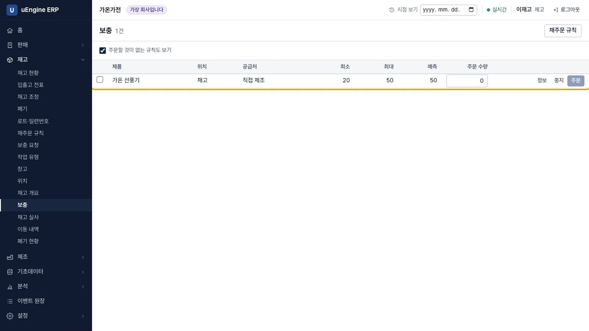
보충 - 초안 열기. 오제조로 제조 → 제조 지시에서
MO/0000441대 초안을 엽니다. 날개는 123으로 계산되어 있습니다.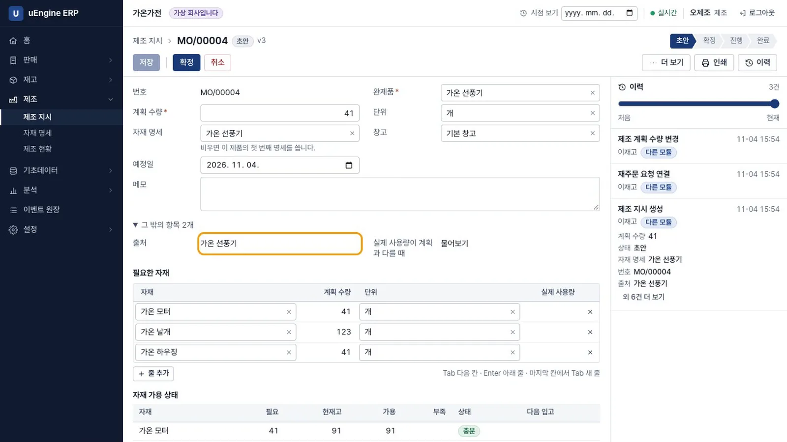
지시 초안 - 되돌리기. 관리자로 완료한 지시
MO/00005의 이력에서 이 작업 되돌리기를 누릅니다. 입출고 전표도 함께 되돌린다는 안내가 먼저 나옵니다. 사유를 적고 실행하면 선풍기는 11에서 9로, 모터는 89에서 91로 돌아옵니다.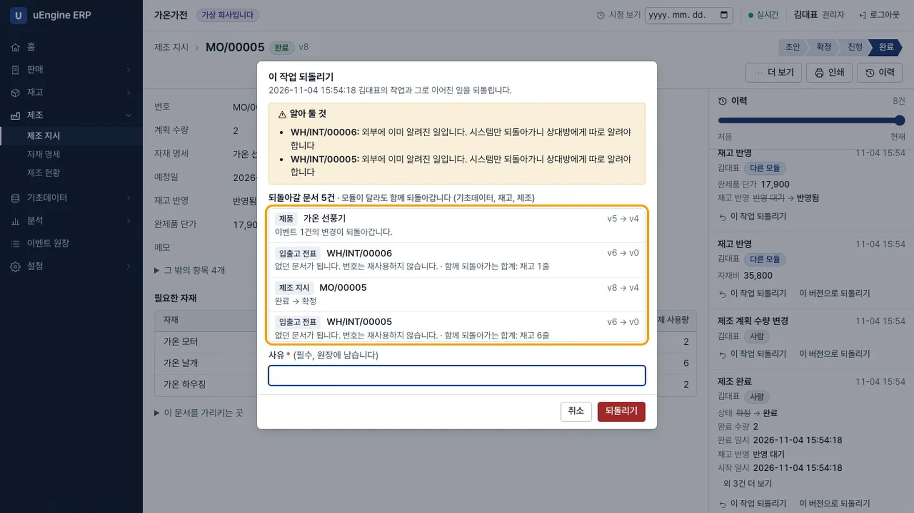
되돌리기 - 막는 경우. 같은 지시를 다시 완료하고 선풍기를 모두 출고한 뒤 되돌리기를 누르면
가온 선풍기 재고가 음수가 됩니다(-2)라는 안내가 나오고 진행되지 않습니다.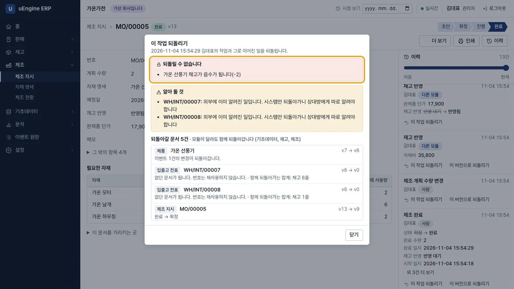
되돌리기 막힘 - 회계. 회계를 켜고 회계 → 시산표를 엽니다. 나중에 켜도 재공품을 거쳐 전표가 생깁니다. 재공품은 차변과 대변이 197,800으로 같아 기말 잔액이 0입니다.
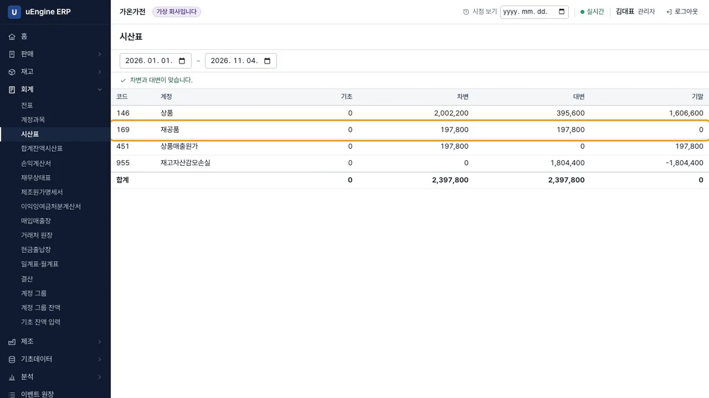
시산표
제조 완료가 10건 쌓이면 실측 제조 기간, 자재 소요, 생산량 변경 what-if가 열립니다. 이 영상에서는 다루지 않습니다.
확인 문제#
자재가 모자란데 왜 막지 않나요?
기록이 늦어 실제로 있는 자재가 반영되지 않을 수 있기 때문입니다. 대신 화면에 부족한 수량을 표시하고, 완료하면 재고가 음수가 된다는 안내를 먼저 보여 줍니다.
재고 수량을 움직이는 것은 어느 모듈인가요?
재고 모듈입니다. 제조 모듈은 완료 이벤트를 내고, 재고 모듈이 구독해 자재를 줄이고 완제품을 늘립니다.
완료한 지시를 언제 되돌릴 수 없나요?
완제품이 이미 나가 재고가 음수가 될 때입니다. 화면에는 어느 제품의 재고가 얼마나 음수가 되는지 나옵니다.